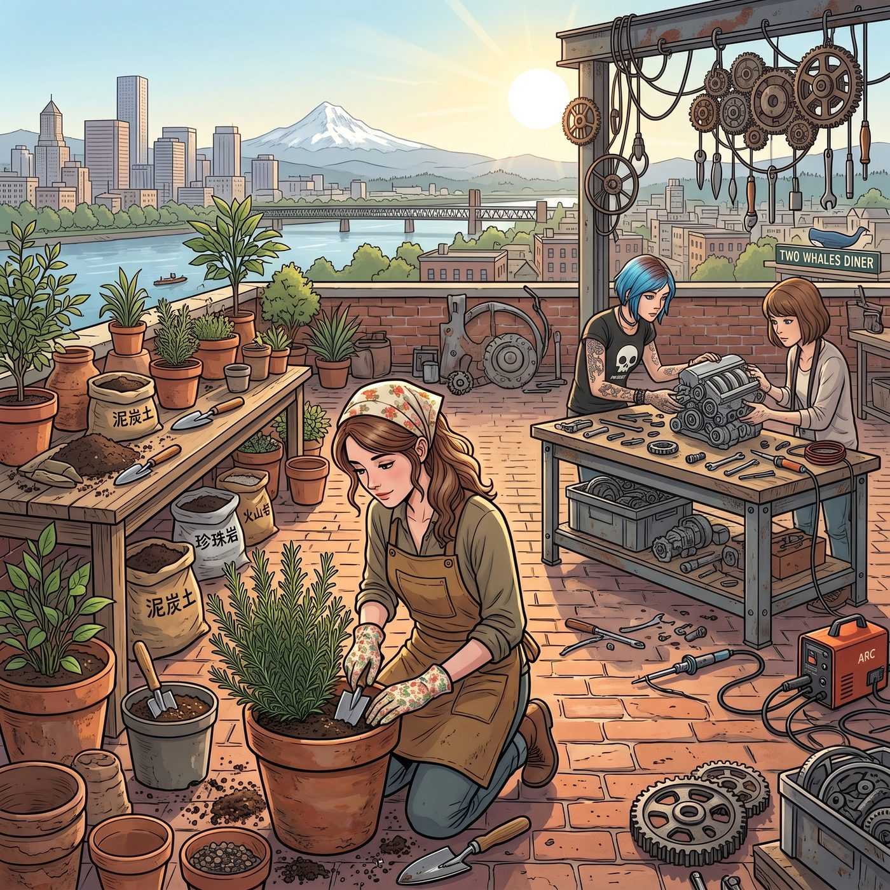

一級通水測試



午後兩點的陽光曬透了天台的紅磚地面，威拉米特河上吹來的暖風帶著淡淡的水汽與泥土芬芳。
從市集帶回來的戰利品被整整齊齊搬上了屋頂。天台中央瞬間被劃分成了兩個畫風截然不同卻又奇妙和諧的工區——一邊是充滿綠意與泥土香的「園藝工坊」，另一邊則是滿地金屬配件與工具的「重工業改裝現場」。
Kate 換上了一身耐髒的棉麻工裝圍裙，戴著印有小花圖案的園藝手套，正專注地蹲在地上給那些新淘來的柴燒紅陶花盆配土。她動作輕柔地將泥炭土、珍珠岩以及老手藝人贈送的火山岩碎石按比例混合，隨後用一把小木鏟小心翼翼地將一株生長茂盛的迷迭香從塑料軟盆中移出，細緻地梳理著根系。
「這種粗陶的透氣性真的太好了，」Kate 捧著新換好盆的迷迭香，眼裡閃爍著溫柔的光芒，「根系在裡面能自由呼吸，等到夏末的時候，薄荷和百里香一定會長得比現在茂盛一倍。」
而在三米開外的金屬護欄旁，Chloe 正單膝跪在一塊厚橡膠墊上，嘴裡咬著一把活動扳手，手裡拿著生料帶，熟練地在那些從舊貨攤淘來的黃銅閥門螺紋上纏繞打圈。
「看好了，Marsh，本大師即將讓妳的植物帝國步入自動化工業革命。」Chloe 拿下扳手，將改裝過的微型高壓分水器「咔嗒」一聲固定在水管主閥門上，眼神專注而狂熱，「四組獨立微滴灌支線，配合我從廢品堆拆出來的機械計時定時器，每天清晨六點和傍晚六點各出水十分鐘——就算妳週末回阿卡迪亞灣看望家人，這些番茄和薄荷也絕對渴不死一根葉子。」
「前提是妳別把水壓調得像是在給卡車洗底盤，Price。」
Victoria 坐在遮陽傘下的帆布長椅上，身上披著真絲防曬開衫，臉上架著一副大墨鏡。她手裡端著 Kate 親手沖泡的新鮮薄荷冰茶，一邊優雅地翻閱著手裡的藝術雜誌，一邊挑剔地瞥了一眼地上錯綜複雜的黑膠軟管，「如果那些工業軟管漏水泡壞了我的戶外羊毛地毯，維修費依然會算在妳的工時費帳戶上。」
「放心吧，尊貴的監工小姐，老娘打過密封膠的接頭連航天飛機都用得上。」Chloe 咧嘴一笑，手裡發力，用管子鉗將最後一個黃銅滴箭節點狠狠擰緊。
Max 則拿著相機在兩人身邊來回穿梭，快門聲清脆地響個不停。她半趴在地上捕捉 Kate 沾著濕泥土的指尖拂過嫩葉的特寫，下一秒又迅速起身，抓拍 Chloe 額角滲著汗珠、滿手金屬油漬卻笑得肆意張揚的側影。
「準備好了嗎？全體後退，進行一級通水測試！」Chloe 拍了拍手上的灰塵，瀟灑地站起身，伸手一把擰開了總供水閥門。
伴隨著一陣輕微的管道震顫與水流湧動聲，預埋在十幾個陶盆底部的微型滴箭同時發出了極其細微而均勻的「滋滋」霧化聲。細密純淨的水霧精準地灑落在每一株迷迭香、常春藤與番茄苗的根部，在午後的陽光下折射出一道道微小的七色彩虹。
「哇……成功了！」Kate 驚喜地輕呼出聲，忍不住摘下手套，雙手輕輕接住那層薄薄的清涼水霧。
「酷斃了。」Max 站在彩虹的光影邊緣，按下快門，將三個人在水霧與陽光中的笑容定格下來。
連遮陽傘下的 Victoria 都忍不住放下雜誌，摘下墨鏡看著那些在水霧中泛著晶瑩光澤的綠葉，嘴角揚起了一抹極難察覺的笑意，隨後輕輕舉起手裡的冰茶杯：
「……勉強承認妳的工程學位沒有白讀，Price。」
微風拂過天台，帶來植物泥土的清冽與水汽的涼爽，四個人的笑聲與波特蘭市區遠處的汽笛聲交織在一起，將這間 Loft 的天台徹底變成了屬於她們的盛夏綠洲。